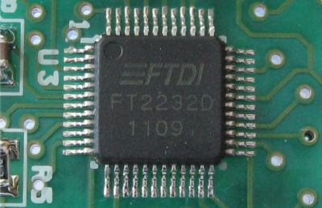
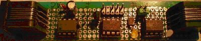

A weblog focused on interesting circuits, ideas, schematics and other information about microelectronics and microcontrollers.
E-books
Disclaimer
Because I have not tested all electronic circuits mentioned on this pages, I cannot attest to their accuracy; therefore, I do not provide a warranty of any kind and cannot be held responsible in any manner.
ATMEL AVR
Z80 + ATMega644 as CP/M Boot Loader
6. March 2011 - 19:40 — adminWhy to prepare an address decoder for specific regions to switch between RAM and ROM? You can use 64kB SRAM chip for the whole space, kickstarted by ATMega. The way shows Ben Ryves.
Atmel AVR Studio 5
5. March 2011 - 13:38 — adminAVR Studio 5 supports all AVR microcontrollers. Now you can bring all your 8– and 32-bit AVR projects into one, easy-to-use environment.
Gameduino: an Arduino game adapter
5. March 2011 - 10:59 — adminGameduino shield is based on FPGA. Inner software CPU is running at 50MIPS. It can perform various graphics (backgrounds, sprites) and 32 channel sound effects.
Netduino
14. November 2010 - 11:39 — adminNetduino is an open source electronics platform using the .NET Micro Framework. The board features a 32-bit microcontroller and a rich development environment, making it a perfect solution for engineers and hobbyists alike.
Acorn micro-kernel for ATMega
18. September 2010 - 15:39 — adminAcorn micro-kernel is a simple open source multitasking OS for 8 bit ATMega CPU, written in Assembler. It provides all the basic synchronization primitives.
SD Audio Player with ATTiny
8. August 2010 - 14:37 — adminThis is a simple SD audio player biult with only an 8-pin microcontroller (ATTiny85).

Arduino Visual Studio
14. July 2010 - 13:46 — adminWith Arduino, you have a powerful IDE. Here is an alternative: A Visual Studio plugin.
ftisp: USB-to-ISP Programmer
27. June 2010 - 12:49 — adminFtisp is a command-line utility that allows program AVR processors via an USB chip FT2232 or FT232R.
Ftisp uses the fast synchronous bit-bang features of this chips.

AVR AttoBASIC - 3x
12. June 2010 - 13:42 — adminThree circuits with AVRs, implementing a simple BASIC interpreter.
1-Wire device emulated by AVR
1. May 2010 - 15:46 — adminI bet you know a lot of artickes on "How to connect 1-Wire device to AVR". Here is the problem reversed: How to simulate an 1-Wire device in AVR?

Photo: MyCorp